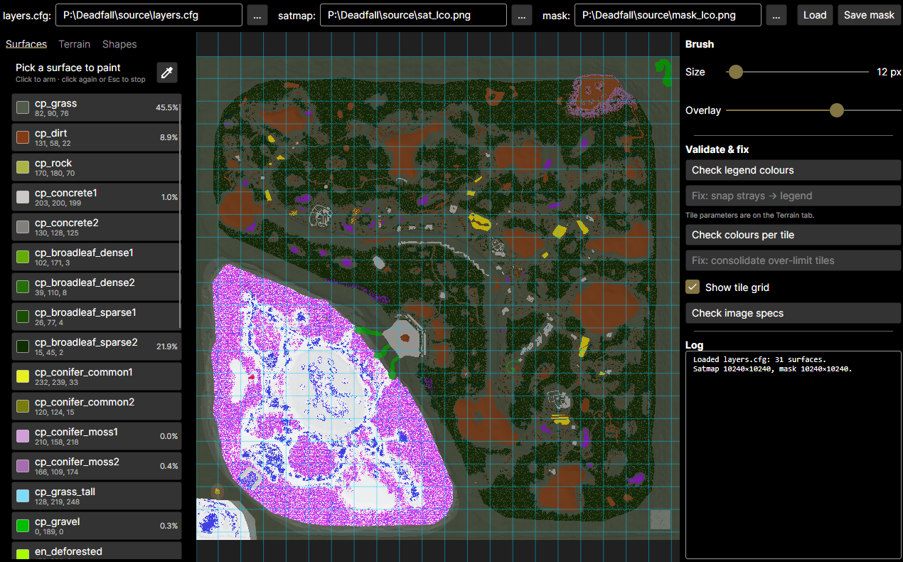
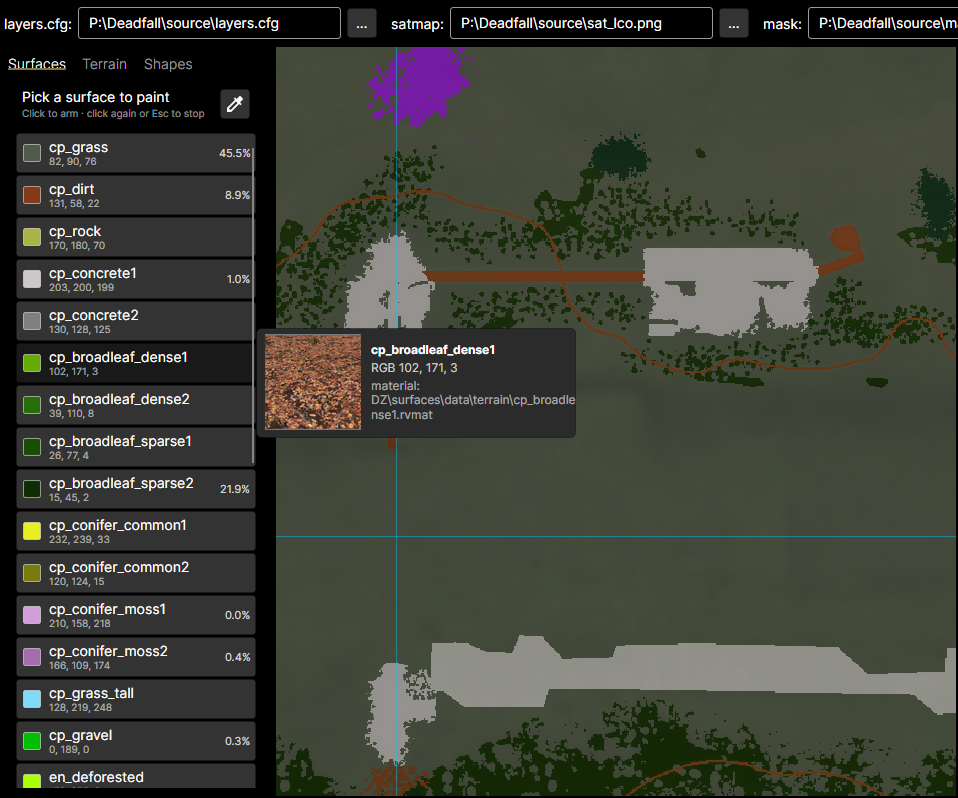
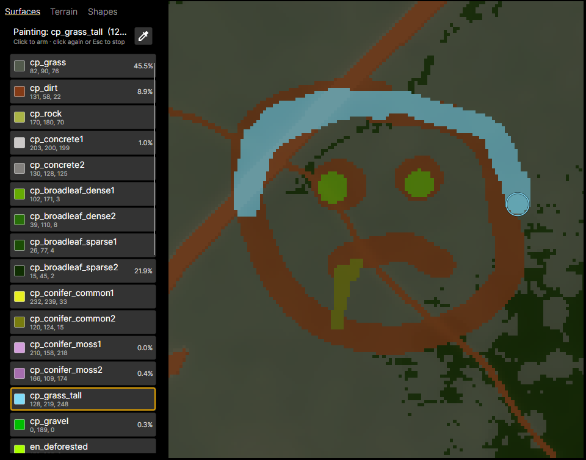
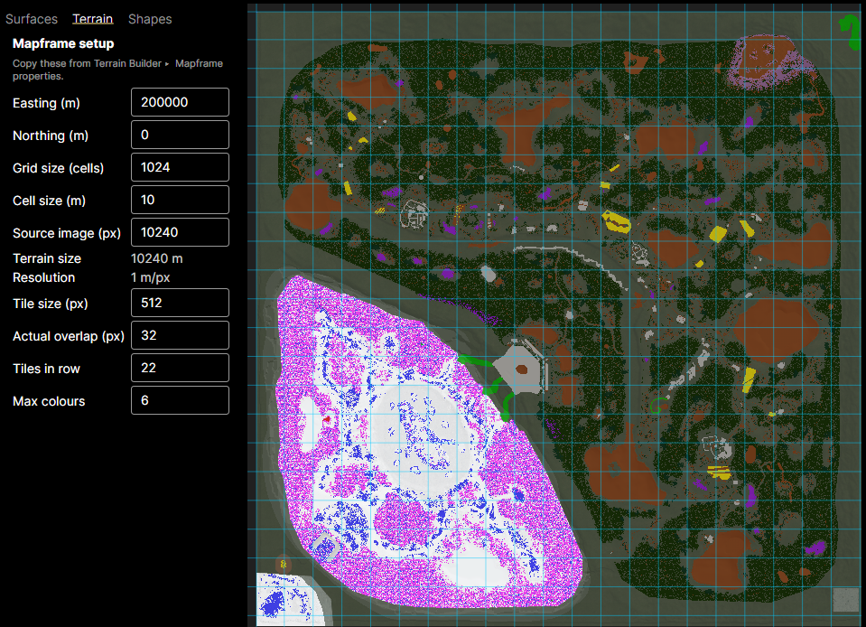
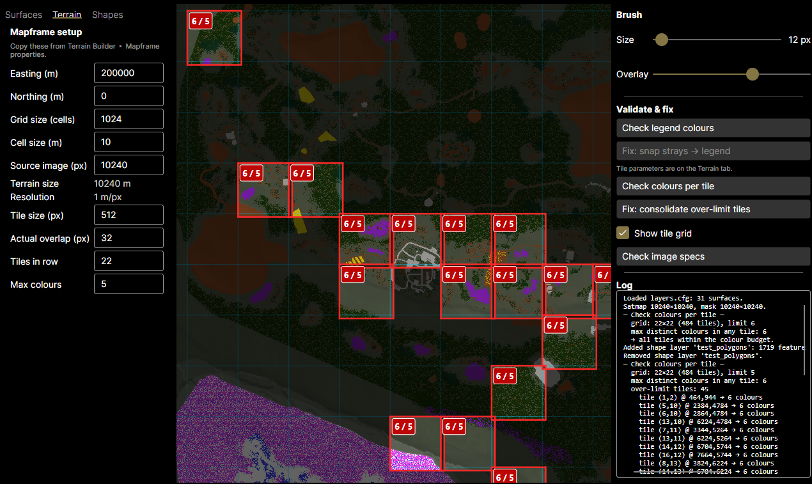
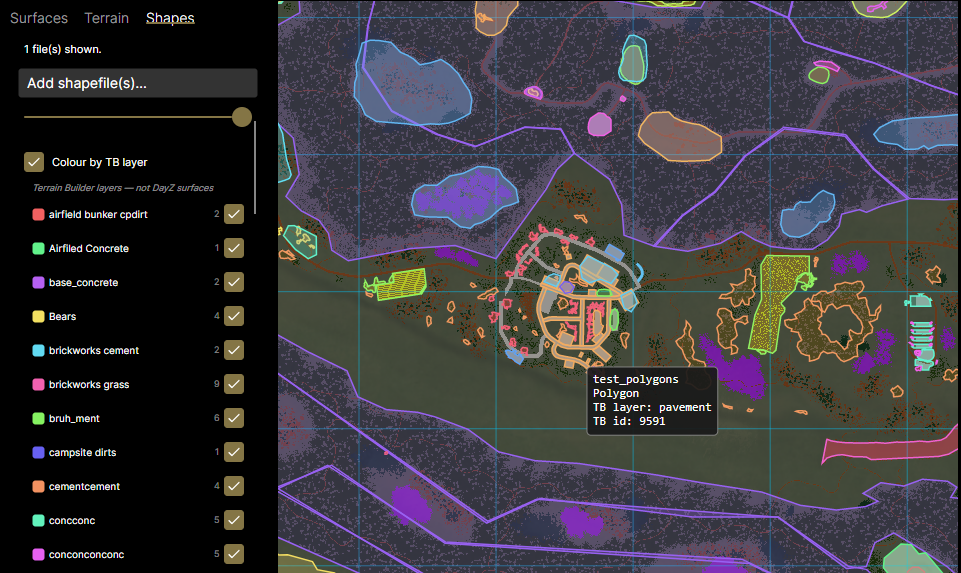

DayZ Mask Editor
A standalone editor for DayZ terrain surface masks — no GIMP required.
Self-contained — no .NET install needed. Updates apply automatically on launch.
Overview
DayZ Mask Editor loads a terrain's layers.cfg, satellite map and surface
mask, overlays the mask on the satmap, and lets you paint surfaces with a hard-edged
pencil locked to the terrain's exact legend palette — then validates the result
against DayZ's rules. It is a standalone rewrite of the GIMP “DayZ SatMask
Tools” plugin, built to stay responsive on full-size (15360²) terrains.
A surface mask is an image where each solid colour maps to a ground surface
(grass, gravel, rock…) defined in layers.cfg. DayZ requires those
colours to be exact and limits how many appear in each Terrain Builder
tile — the editor exists to make painting those masks safe and to catch rule
violations before you pack the terrain.
Where it fits in your Terrain Builder workflow
DayZ ground surfaces come from three inputs Terrain Builder ties together in the
Mapframe: the satellite source (satmap), the
surface mask source (one solid legend colour per pixel), and
layers.cfg (which maps each colour to a material and its textures). When you
run Generate Layers, Terrain Builder cuts the satmap and mask into
tiles (per the Mapframe's Samplers settings) and builds
each tile's ground material from the surfaces it finds — but a tile may only hold a
limited number of distinct surfaces (DayZ's 4/6-colours-per-tile rule), and every pixel
must be an exact legend colour. A stray colour or an over-budget tile
makes Generate Layers fail or bake the wrong material — usually
found only after a slow Generate Layers → Export WRP → pack (Addon Builder)
→ in-game test round trip.
This editor is the paint-and-validate step before Generate Layers, so the mask you feed Terrain Builder is already valid:
- In Terrain Builder, open Mapframe Properties and note your values — Easting/Northing from the Location tab; grid & cell size, the satellite/surface source image size, and the tile size / overlap from the Samplers tab.
- Open your terrain's
layers.cfg, satmap and current surface mask here, and paint with a pencil that can only lay down exact legend colours. - Enter those Mapframe values on the Terrain tab so Check Colours Per Tile uses the same tiling Terrain Builder will — it flags over-budget tiles before Generate Layers does, and auto-fix can snap strays and consolidate over-limit tiles.
- (Optional) Overlay Terrain Builder
.shpexports (roads, objects, areas) as a visual reference so painted surfaces line up with in-world features. The overlay never changes surface assignments. - Save the mask as a byte-exact PNG and select it as the surface mask in the Layers Generator as usual, ready for the next Generate Layers.
Back up your surface mask first. Saving overwrites the mask file in place, and auto-fix edits pixels in bulk — keep a copy of the original so you can always fall back to it.
In short: the editor keeps your surface mask valid to DayZ's rules so the expensive Generate Layers → Export WRP → pack → in-game test loop doesn't fail on avoidable colour or tile-limit errors.
Install & updates
Windows: download the installer and run it — one click, no .NET needed (the app is self-contained). It installs per-user with Start-menu and desktop shortcuts.
Auto-updates: on launch the app checks GitHub Releases, downloads any newer version in the background, and applies it on the next start. You don't need to reinstall.
macOS / Linux: the app is cross-platform, but pre-built installers may not be published for every release. Check the Releases page, or build from source (see the repository README).
Quick start
- Open the app. Along the top bar, set the three paths — layers.cfg,
satmap, and mask — using the
…browse buttons. - Click Load. The mask is drawn over the satmap and the view fits to the window.
- Open the Surfaces tab on the left and click a surface to arm it (it gets an amber outline).
- Paint on the canvas with the left mouse button. Pan with a middle/right drag, zoom with the wheel.
- Run the checks under Validate & fix on the right, then click Save mask.

Try it: the repository ships a tiny demo terrain under
samples/DemoTerrain/source/ (layers.cfg, satmap.png,
mask.png) so you can explore every feature without a real map.
The workspace
The window has four regions:
- Setup bar (top) — the three file paths, Load, and Save mask.
- Left panel — three tabs: Surfaces (the palette), Terrain (Mapframe values), and Shapes (overlay layers).
- Canvas (centre) — the satmap with the mask painted over it, where you edit.
- Tools panel (right) — brush size, overlay opacity, the validate/fix buttons, and a running Log. A status line sits along the bottom.
Loading a terrain
In the setup bar, point each field at a file — type the path or use the
… button:
- layers.cfg — the Arma/DayZ config that defines the legend (which colour is which surface). This drives the whole palette.
- satmap — the satellite image, shown underneath the mask for reference.
- mask — the surface mask you'll edit.
These are the same files your Terrain Builder project already uses — typically under
your project's source folder on the P: drive, e.g.
P:\mymap\source\layers.cfg. There's nothing to export or convert.
Click Load. The editor parses the legend, builds the surface list, and fits the image to the view. Loading, saving and validation show a progress overlay and run without freezing the UI.
Surfaces & the palette
The Surfaces tab lists every legend colour as a row with its swatch, name,
RGB value and live coverage % (how much of the mask currently
uses it). Hover a row to preview its texture thumbnail and material path.

Arming a surface: click a row to arm it for painting — it gets an amber outline and becomes the colour your pencil lays down. Click it again, or press Esc, to stop painting. Only legend colours can be armed, so you can never paint an invalid colour.
Eyedropper: toggle the eyedropper button at the top of the tab, then click anywhere on the mask to arm whatever surface is painted there — handy for matching an existing area.
Painting
With a surface armed, paint on the canvas by dragging with the left mouse button. The pencil is hard-edged and writes the exact 8-bit legend colour — no anti-aliasing, no blended edges — which is exactly what DayZ requires.

- Brush size — the Size slider on the right panel (1–512 px). The round brush cursor previews the size and armed colour.
- Overlay opacity — the Overlay slider fades the mask against the satmap so you can line features up; it does not change the saved mask.
- Pan — drag with the middle or right mouse button.
- Zoom — the mouse wheel, centred on the cursor.
- Undo / redo — Ctrl+Z and Ctrl+Y (or Ctrl+Shift+Z), up to the last 30 strokes.
Terrain / Mapframe setup
The Terrain tab holds your Mapframe values — copy them from Terrain Builder ▸ Mapframe Properties: Easting/Northing from the Location tab, everything else from the Samplers tab. They let the editor map real-world coordinates to mask pixels (used by both the tile checks and the shapefile overlays):
- Easting / Northing — the terrain's world origin, in metres (Location tab).
- Grid size (cells) and Cell size (m) — the terrain sampler values; together these give the terrain's size in metres and its resolution, both shown read-only below.
- Source image (px) — TB's Satellite/Surface (mask) source images ▸ Size: the source resolution the mask was made for. The editor checks your loaded mask matches this.
The tile parameters drive the per-tile colour check:
- Tile size (px), Actual overlap (px), Tiles in row — TB's Satellite/Surface (mask) tiles values (Size of tile, Actual overlap, Tiles in row count).
- Max colours — the colour budget per tile. DayZ's hard limit is 6 distinct surfaces per tile; many terrain devs budget 4 for headroom. Enter whichever your terrain targets.

Enter these values before running Check colours per tile or adding shapefiles — both need the Mapframe to place things correctly. The editor refuses to guess: if the setup is incomplete or inconsistent it tells you what's wrong instead of drawing something misleading.
Validation & auto-fix
The right panel groups the checks and their matching fixes:
Check legend colours
Scans the mask for any pixel whose colour isn't in the legend (“strays” from resampling or old edits) and highlights them in magenta. If strays are found, Fix: snap strays → legend becomes available — it replaces every non-legend pixel with the nearest legend colour, then re-runs the check to confirm.
Check colours per tile
Using the Mapframe/tile values from the Terrain tab, it counts distinct colours in each Terrain Builder tile and flags any tile over the Max colours budget — drawn as a red tile with a colours/limit badge, plus an ASCII grid in the log. Turn on Show tile grid to see the tile boundaries while you work. When over-limit tiles exist, Fix: consolidate over-limit tiles brings each one down to the budget by replacing its rarest colours (fragment-aware, matching the original plugin), then re-checks.

Check image specs
Sanity-checks the loaded images (dimensions, format) against what the terrain expects, so a wrong-sized or wrong-type file is caught early.
Fixes are automatic but never silent — each one re-runs its check afterwards and logs what it changed, so you can confirm the mask is clean before saving.
Shapefile overlays
The Shapes tab loads Terrain Builder .shp exports (roads,
objects, areas) as read-only reference layers drawn over the satmap, so you
can see where in-world features sit while you paint. They never change the mask — they
are a guide only.

- Add shapefile(s)… to load one or more layers.
- Per layer: click the swatch to cycle its colour, toggle visibility, adjust opacity, or remove it.
- Colour by TB layer splits a shapefile by its Terrain Builder
__LAYERfield, so you can colour and toggle each sub-layer independently. (These are Terrain Builder layers, not DayZ surfaces.)
Overlays are positioned from the Mapframe values. If the setup is incomplete, the mask doesn't match the declared source size, the tile values don't tile that size, or a shapefile falls outside the terrain extent, the layer shows a warning and won't be drawn — fix the Mapframe values rather than trusting a mis-placed overlay.
Saving
Click Save mask to write the mask back to a lossless PNG. The output is byte-exact — only pixels you painted change; nothing is recompressed or dithered — so it's safe to round-trip through the editor repeatedly.
Controls reference
| Input | Action |
|---|---|
| Left drag | Paint with the armed surface |
| Left click (eyedropper on) | Sample the surface under the cursor and arm it |
| Middle / right drag | Pan the view |
| Mouse wheel | Zoom in / out (centred on the cursor) |
| Esc | Stop painting (disarm the current surface) |
| Ctrl+Z | Undo the last paint stroke (up to 30) |
| Ctrl+Y / Ctrl+Shift+Z | Redo |
Troubleshooting
- I can't paint / no colour appears. Arm a surface first (click a row on the Surfaces tab). Only legend colours are paintable.
- “Check colours per tile” does nothing or errors. Fill in the Terrain tab (tile size, tiles in row, max colours, source px) — the check needs the tiling geometry.
- A shapefile won't show. It's likely outside the terrain extent or the Mapframe values are off — check the layer's warning message and the Terrain tab.
- Strays keep appearing. They usually come from an earlier non-hard-edged edit or a resample. Run Check legend colours then Fix: snap strays → legend.
- Windows SmartScreen blocks the installer. The installer is unsigned, so the first run may show “Windows protected your PC” — click More info → Run anyway.
- macOS won't open the app. Unsigned builds need a right-click → Open the first time to bypass Gatekeeper.
Found a bug or have a request? Open an issue on GitHub.